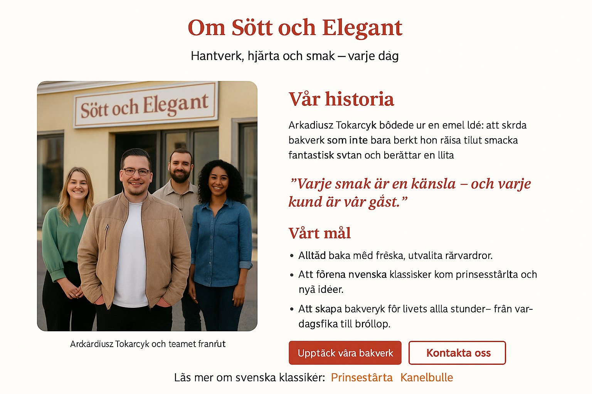

Bakglädje, hantverk och hjärta i varje detalj

Sött och Elegant föddes ur en enkel ide - att skapa bakverk som inte bara smakar gott, utan också förmedlar känslor. Grundaren Arkadiusz Tokarczyk började sin resa med en passion för tradittionelt svenskt hantverk och en nyfikenhet på moderna smaker.
"Varje smakar är en känsla - och varje kund är vår gäst"
Läs mer om svenska klassiker: Prinsesstårta · Kanelbulle · Kladdkaka